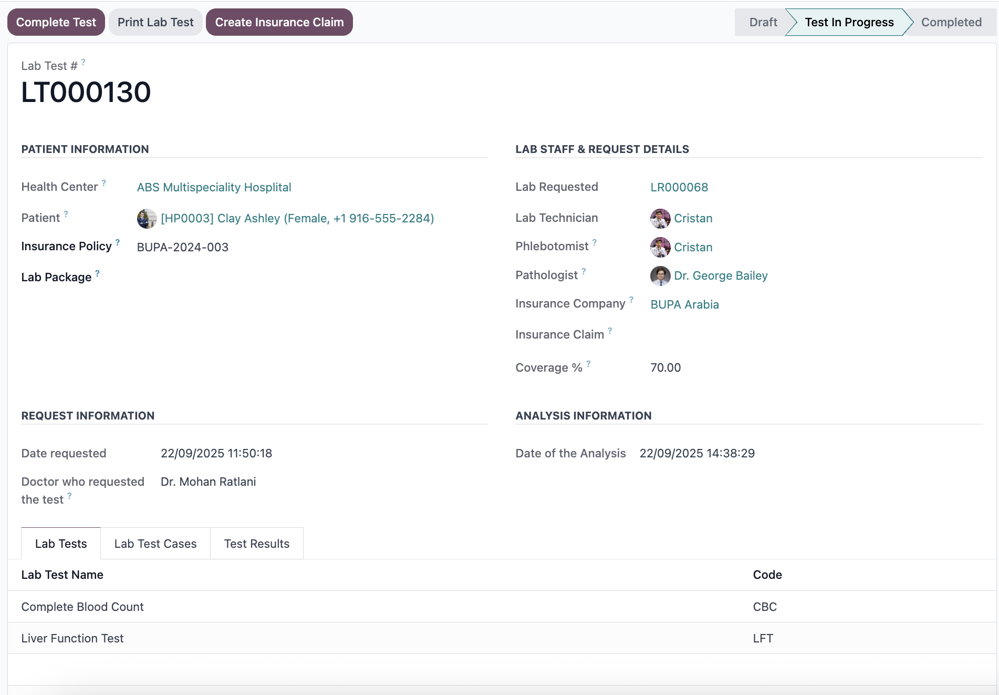

intarvas Lab: Advanced Laboratory Information Management System
Transform your laboratory operations with the most comprehensive Laboratory Information Management System (LIMS) built for Odoo. intarvas Lab seamlessly integrates advanced laboratory management capabilities with powerful enterprise resource planning features, including automated workflows, complete test management, quality control, and regulatory compliance. From small diagnostic labs to large hospital laboratory networks, intarvas Lab delivers the unified platform you need to improve accuracy, streamline operations, and drive excellence in laboratory services.
